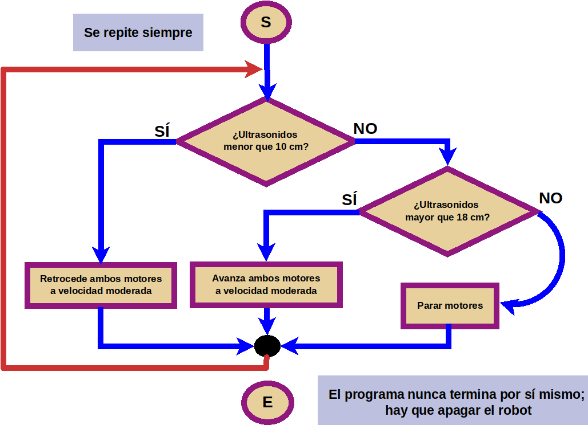

Ayuda a Mara en su aventura marciana
Task five. Más vale ser prudente.
Caso práctico
Proceso para llevar a cabo la tarea
Diagramas de flujo
¿Qué es un diagrama de flujo?
Un diagrama de flujo es una representación esquemática de las órdenes que debo escribir. Es otra manera de hacerme un guión de lo que después debo programar, de forma que mientras lo hago voy pensando en la estructura del programa, su lógica.
Elementos Básicos: Empieza / Termina
Este cartucho se usa para indicar con una "S" que comienza el algoritmo y con una "E" que se acaba
Elementos Básicos: Proceso / Asignación
Un rectángulo que me indica una orden genérica, o una asignación de valor a una variable.
Elementos Básicos: Entrada / Salida
Elementos Básicos: Decisión o Condicional
Símbolo que indica una elección. De él entra el flujo del programa y salen dos flujos con "SÍ" o "NO".
Elementos Básicos: Proceso / Asignación
Mi programa con diagramas de flujo
Ejemplo
Así quedaría el programa con un diagrama de flujo. La primera vez que lo hacemos, lo muestro para que sirva de ejemplo. En los ejercicios siguientes deberéis hacerlo vosotros mismos.
He elegido dos umbrales. El primero de 10 cm. Si la distancia es menor, retrocede. El segundo de 18 cm. Si la distancia es mayor, avanza. Si está entre 10 y 18 cm, se para.Ejemplo diagrama

Cómo trabajar
- Normalmente se trabaja en parejas o en pequeños grupos, con un robot y un ordenador para programarlo.
- Aunque tu compañero/a sea quien maneje el ordenador o el robot, intenta siempre entender lo que estáis programando o haciendo: las órdenes o bloques que se están usando, el tiempo que tardan en ejecutarse, el orden en el que se colocan los bloques en el programa...
- Compartir las ideas con los demás, colaborar en lograr el reto, no molestar a otros grupos si están probando o trabajando...
- Si no sale a la primera, no desanimarse. Es normal que haya que hacer varias pruebas hasta que salga.
Pistas
La clave para el éxito está en:
- Pensar siempre, a priori, qué estamos haciendo.
- Averiguar los bloques de programación necesarios.
- Dibujar el diagrama de flujo ANTES de hacer el programa. Pensar escribiendo / borrando / rectificando bloques.
- Elegir velocidades lentas al principio. Una vez el programa funcione, puede aumentarse la velocidad a ver qué pasa.
- NOTA: es posible que te guste cambiar los umbrales... ¿Por qué no? ¿Qué ocurre con umbrales muy próximos? ¿Y más separados?
- NOTA: es posible que te guste cambiar los umbrales... ¿Por qué no? ¿Qué ocurre con umbrales muy próximos? ¿Y más separados?
- POSIBLES PROBLEMAS:
- La inercia de los motores hace que el robot avance cuando debería pararse. Hay que "jugar" con los umbrales y las velocidades para evitar este problema.
- Un sensor de ultrasonidos torcido o muy bajo puede hacer que se detecte el suelo. También elementos que se encuentren a los lados del sensor de ultrasonidos.
- El obstáculo que se pone frente al robot es demasiado pequeño.
Sobre los diagramas de flujo
Obra publicada con Licencia Creative Commons Reconocimiento No comercial Compartir igual 4.0